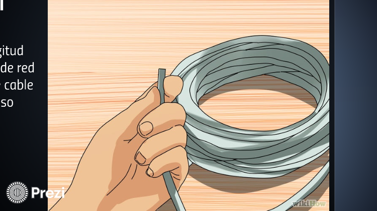
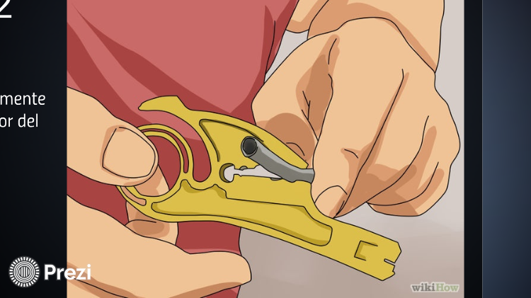
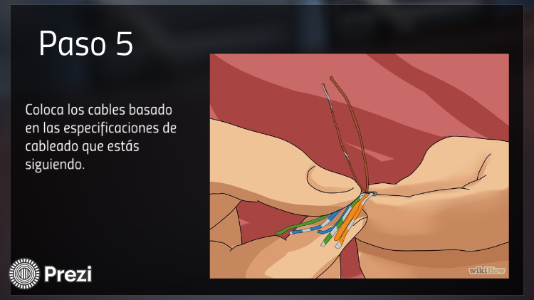
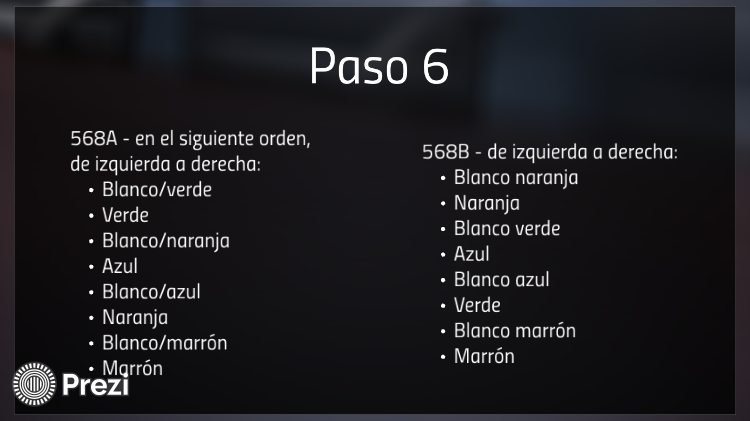
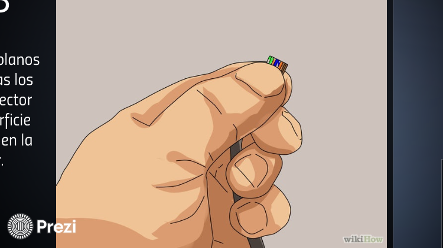
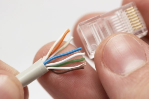
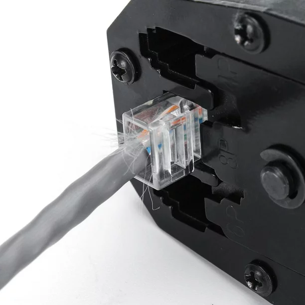
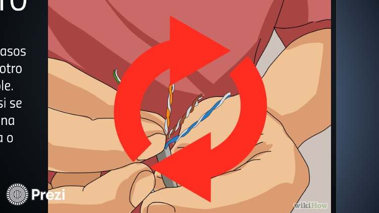

Los soguientes pasos son para pautas de construcción generales de cables ETHERNET categoría 5 (Comúnmente conocido como Cat5).
Los pasos para crear un cable de red son los soguintes:
Tener el cable UTP Cat:5 necesario para realizarlo.

Con el pelacables retirar la cubierta del cable, quitarle aproximadamente 1 dedo.

Se parar los cables cuidadosamente.

Teniendo los cables separados, ahora lo vamos a ordenar dependiendo la configuración que desea realizar puede ser: Categoría A, Categoría B o Mixto.

Ya que tengamos los cables ordenados, proseguimos a cortar los cables a modo de que quede parejos.

Teniendo los cables parejos, lo siguiente que sigue es meter los cables en el RJ45 cuidadosamente para que cada pin tenga un cable, verificamos que los cables entren y que topen, sino topa puede tener fallas después.

Lo siguiente que sigue es, con la ponchadora vamos a ponchar los cables.

Repetir los pasos anteriores para la otra punta, si es para la configuración A y B los dos extremos debe tener el mismo orden, con el cable cruzado debe de ser en un extremo Configuración A y en el otro extremo Configuración B.

Y así es como creamos un cable de red ya se Mixto o un cable directo.